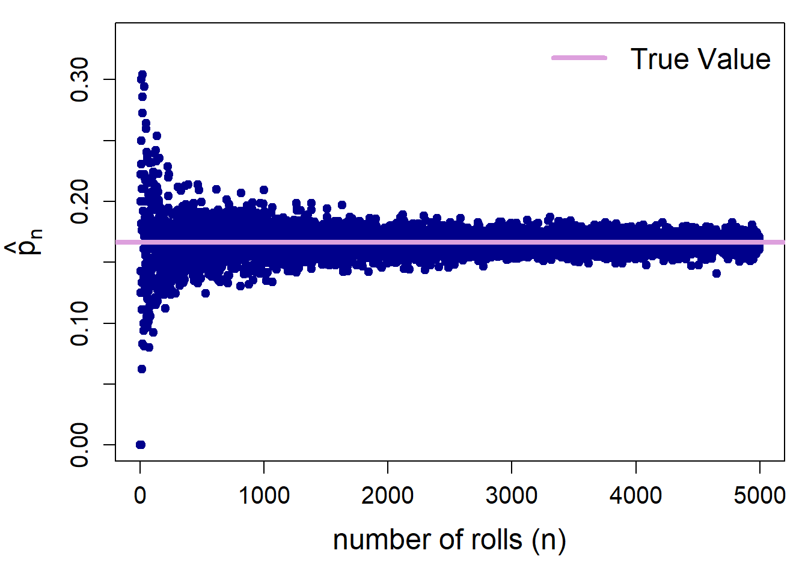

# Draw one value from 1 through 6
# This simulates rolling a fair six-sided die once
# 1:6 → possible outcomes (the faces of the die)
# size = 1 → number of rolls
# replace = TRUE → allows the same number to appear again in future rolls
sample(1:6, size = 1, replace = TRUE)[1] 1# True probability of rolling a 1 with a fair die
p <- 1/6
# Set seed once for reproducibility
set.seed(123)
# Create an empty list to store simulation results
z <- list()
# Repeat the experiment for n = 1 to 5000 rolls
for(i in 1:5000){
# Simulate i die rolls and store results in a data frame
# number of rolls (n)
# rolls = outcomes from rolling a fair die i times
z[[length(z)+1]] <- data.frame(
n = i,
rolls = sample(1:6, i, replace = TRUE)
)
}
# Combine all stored data frames into one large data frame
z <- as.data.frame(do.call(rbind, z))
# Create indicator variable:
# 1 if roll equals 1, 0 otherwise
z$one <- ifelse(z$rolls == 1, 1, 0)
# View first few rows
head(z) n rolls one
1 1 3 0
2 2 6 0
3 2 3 0
4 3 2 0
5 3 2 0
6 3 6 0# For each value of n, compute the proportion of 1s
# This gives us the sample proportion p-hat_n
y <- aggregate(one ~ n, data = z, mean)
# View first few results
head(y) n one
1 1 0.0
2 2 0.0
3 3 0.0
4 4 0.0
5 5 0.2
6 6 0.5# Plot sample proportion against number of rolls
par(mar = c(5, 5, 1, 1))
plot(y$n, y$one,
xlab = "number of rolls (n)",
ylab = expression(hat(p)[n]),
cex.lab = 1.5,
cex.axis = 1.25,
ylim = c(0, 2*p),
col = "darkblue",
pch = 19)
abline(h = p, lwd = 4, col = "plum")
legend("topright",
legend = c("True Value"),
lwd = 4, col = "plum",
bty = "n", cex = 1.5)